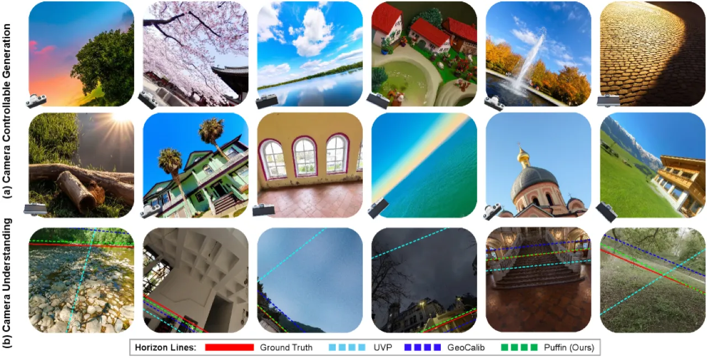
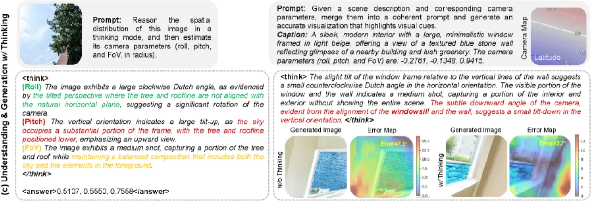
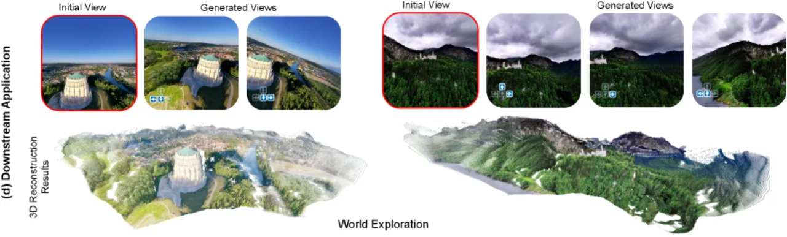
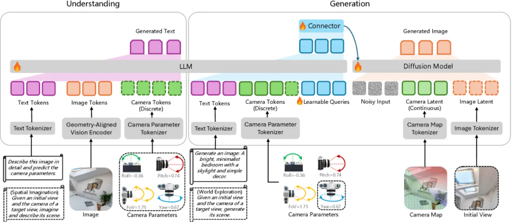
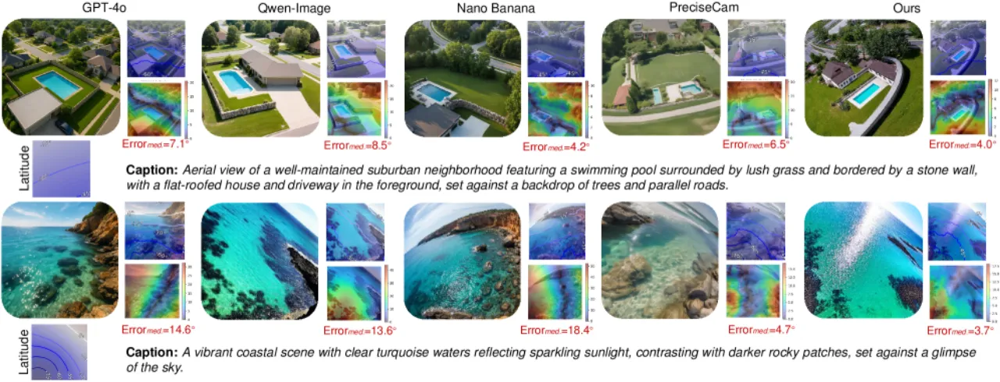
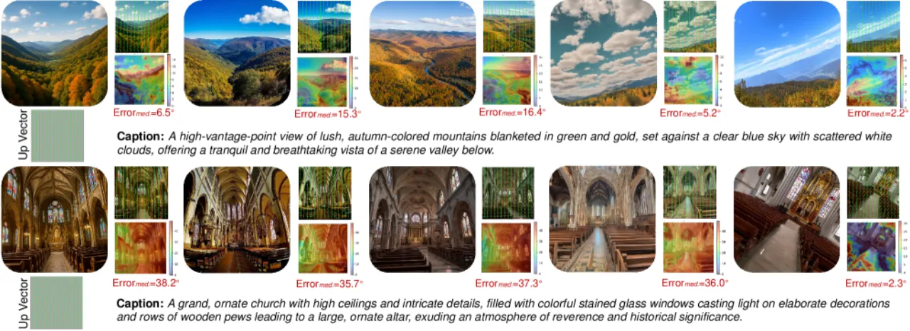
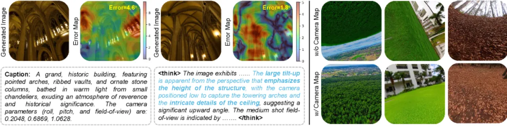

Puffin 将相机参数视为语言模态，通过"Thinking with Camera"机制，在同一框架内统一实现相机几何理解（calibration）与可控图像生成（novel view synthesis），在 MegaDepth、TartanAir 等多个基准上超越专用方法。
相机几何理解（从图像估计 roll/pitch/FoV 等参数）与可控图像生成（按指定视角合成场景）是空间智能的两大基石，但长期以来被作为独立任务研究。现有方法将相机参数当作辅助数字标签，忽视了其本身作为模态的语义价值，导致模型在追求语义对齐时忽略精确的空间约束，性能次优。
"Camera-centric understanding and generation are two cornerstones of spatial intelligence, yet they are typically studied in isolation."

核心挑战在于模态鸿沟：相机参数是抽象的数值（如 FoV=72°），缺乏视觉语义，而大型多模态模型（LMM）的训练目标是语义对齐。现有做法要么独立训练专用的几何估计器，要么将参数硬编码为辅助标签，均未能充分利用 LMM 的视觉-语言推理能力。Puffin 提出将相机参数视为一种语言，用摄影专业术语（如 "tilt-up"、"Dutch angle"、"close-up"）作为中间表示，弥合数值几何与高层语义之间的差距。
Puffin 以自回归语言回归（camera understanding）和扩散模型生成（camera-controllable generation）为双主干，通过共享的"Thinking with Camera"链式推理将二者统一。整个系统基于四阶段渐进式训练策略，在 Puffin-4M 数据集上训练，共耗时约 4 天（64 A100 GPU）。

该机制的核心思想是将三类空间先验编码进 chain-of-thought 推理链：

Puffin 由四个核心模块构成：

从约 20 万张全景图（panoramic images）出发，通过透视投影裁切构造 400 万个 vision-language-camera 三元组，覆盖室内/室外多样场景，参数范围为 roll/pitch ∈ [−45°, 45°]、FoV ∈ [20°, 105°]、yaw ∈ [0°, 360°]。每个样本包含：精确相机参数、场景文字描述、pixel-wise perspective field map、以及空间推理 caption（用于 Thinking SFT）。
评估分两大任务：（1）相机几何理解，在 MegaDepth、TartanAir、LaMAR 三个公开数据集及自建 Puffin-Und 基准上评估 roll/pitch/FoV 误差；（2）相机可控图像生成，在自建 Puffin-Gen 基准（650 个 caption-camera 对）上评估空间精度（Up Vector/Latitude/Gravity 误差）与视觉质量（FID）。
| 数据集 | 指标 | GeoCalib | Perspective Fields | Puffin (Ours) |
|---|---|---|---|---|
| MegaDepth | Roll↓ | 0.36° | 0.49° | 0.32° |
| MegaDepth | Pitch↓ | 1.94° | 2.09° | 1.08° |
| MegaDepth | FoV↓ | 4.46° | — | 2.42° |
| TartanAir | Roll↓ | 0.73° | 0.49° | 0.40° |
| TartanAir | Pitch↓ | 1.89° | 1.36° | 0.95° |
| LaMAR | Roll↓ | 0.43° | 0.62° | 0.38° |
| LaMAR | Pitch↓ | 1.08° | 1.75° | 0.71° |
| 方法 | Up Vector↓ | Latitude↓ | Gravity↓ | FID↓ |
|---|---|---|---|---|
| GPT-4o | 34.55° | 21.25° | 33.48° | 95.92 |
| PreciseCam | 18.66° | 12.49° | 18.39° | 90.91 |
| Puffin (Ours) | 11.94° | 6.34° | 6.79° | 69.46 |


消融实验在自建 Puffin-Und 基准上进行，验证 Thinking with Camera 机制及架构选择的重要性：
| 配置 | Roll↓ | Pitch↓ | FoV↓ |
|---|---|---|---|
| InternVL3（通用 VLM 直接微调） | 0.91° | 1.72° | 2.96° |
| Qwen2.5-VL（通用 VLM 直接微调） | 0.79° | 1.61° | 2.91° |
| Vision Encoder Only（仅视觉编码器） | 0.55° | 1.00° | 1.87° |
| Puffin（base，无 Thinking） | 0.47° | 0.91° | 1.48° |
| Puffin（+ Thinking with Camera） | 0.41° | 0.74° | 1.21° |

消融结论：（1）直接 fine-tune 通用 VLM（InternVL3、Qwen2.5-VL）由于视觉特征经过语义压缩，反而不如专用视觉编码器；（2）Thinking with Camera 机制在所有三个指标上均带来稳定提升；（3）统一训练（理解+生成）相比各自独立训练存在正向互促。
"Because our training dataset is constructed at a fixed resolution of 512×512, Puffin's image generation is currently restricted to a single scale."训练数据全部以 512×512 构建，导致生成模块目前只能输出单一分辨率，限制了在需要更高分辨率的场景中的实用性。作者指出可通过构建多尺度训练集解决，"these limitations are orthogonal to our main focus."
对非方形输入，Puffin 采用中心裁切后缩放的策略，当实际图像长宽比与方形差异较大时，边缘内容被丢弃，可能导致几何估计性能下降。
"The calibration errors it reports can be ambiguous, especially for generated images exhibiting only subtle spatial differences."相机可控生成的定量评估依赖于对生成图像再做离线相机标定（反算参数），这本身存在估计误差，对空间差异细微的生成图像尤为明显，评估结果可能低估实际控制精度。
当前版本尚未建模镜头径向畸变（radial distortion），对于广角镜头或鱼眼镜头拍摄的图像，几何估计精度会受影响。